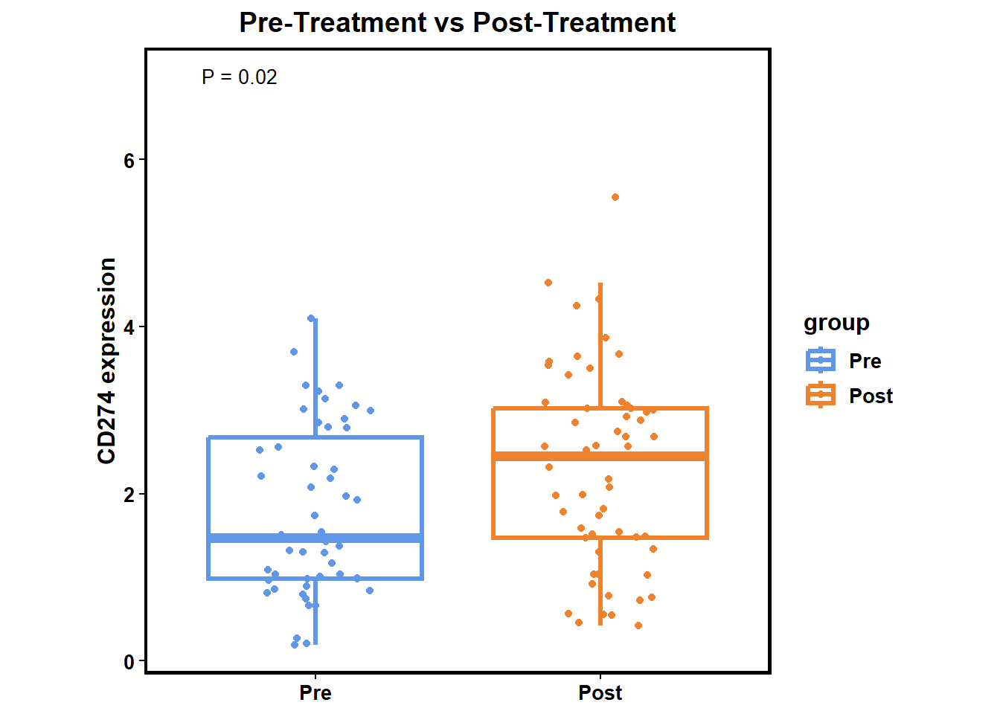
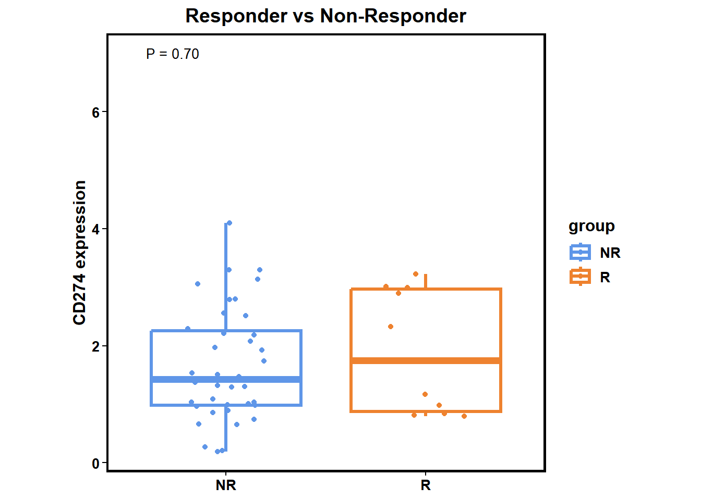
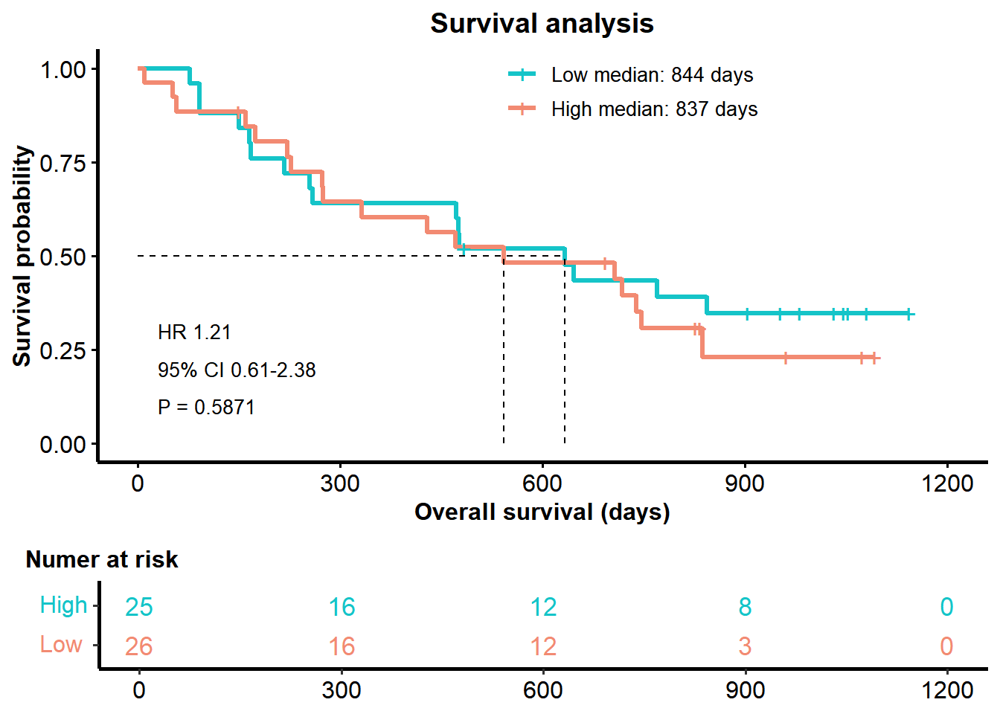

Chapter 2 🚩 Biomarker Evaluation
2.1 Integrate analysis
The integrate_analysis() function returns the results of both the differential analysis and survival analysis for a gene or gene set within a dataset (or datasets).
integrate_analysis(SE=MEL_GSE91061, geneSet="CD274")## $`Response vs Non-Response`
## log2(FC) P Score
## 1 0.3162897 0.5257107 0.2792532
##
## $`Pre-Therapy vs Post-Therapy`
## log2(FC) P Score
## 1 -0.8121796 0.01780415 -1.749479
##
## $Survival
## HR P Score
## 0.9203840 0.8175588 -0.08748102.2 Differential analysis
You can use diff_biomk() to visualize differential analysis result between Pre-Treatment and Post-Treatment patients or Responders and Non-Responders in specified gene.
Pre-Treatment vs Post-Treatment
diff_biomk(SE=MEL_GSE91061,gene='CD274',type='Treatment') +
ggtitle("Pre-Treatment vs Post-Treatment") +
theme(plot.title = element_text(hjust = 0.5)) 
Responder vs Non-Responder
diff_biomk(SE=MEL_GSE91061,gene='CD274',type='Response') +
ggtitle("Responder vs Non-Responder") +
theme(plot.title = element_text(hjust = 0.5))
2.3 Suvival analysis
You can use diff_biomk() to visualize survival analysis result in specified gene.
P <- surv_biomk(SE=MEL_GSE91061,gene='CD274')
P$plot <- P$plot +
ggtitle("Survival analysis") +
theme(plot.title = element_text(hjust = 0.5))
P
2.4 Calculate comprehensive signature score
By employing the score_biomk() function, you can obtain a comprehensive signature score matrix for the 23 signatures in tigeR. In this matrix, the columns represent the signature scores, and the rows denote the sample names.
| Signature | Full Name | Method | PMID | Cancer Type |
|---|---|---|---|---|
| IRS | immunosenescence-related score | Multivariate cox analysis | 35280438 | Urothelial Cancer |
| tGE8 | predefined eight-gene cytotoxic T cell transcriptional signature | Median of Z-score | 31686036 | Muscle-invasive Urothelial Cancer |
| MEMTS | metastasis-related EMT signature | Average mean | 35769483 | Gastric Cancer |
| PRGScore | pyroptosis-related gene score | Average mean | 35479097 | Urothelial Cancer; Melanoma |
| Angiogenesis | Angiogenesis | Average mean | 29867230 | Metastatic Renal Cell Carcinoma |
| Teffector | Average mean | 29867230 | Metastatic Renal Cell Carcinoma | |
| Myeloid_inflammatory | Average mean | 29867230 | Metastatic Renal Cell Carcinoma | |
| IFNG_Sig | IFNG-response gene expression signature | Average mean | 29150430 | Melanoma |
| TLS | gene signature associated with tertiary lymphoid structures | Weighted mean | 31942071 | Melanoma |
| MSKCC | signature derived from Memorial Sloan Kettering Cancer Center’s data | Weighted mean | 34421886 | Bladder Cancer |
| LMRGPI | lipid metabolism-related gene prognostic index | Weighted mean | 35582412 | Urothelial Cancer |
| PRS | pyroptosis risk score | Weighted mean | 35085103 | Breast Carcinoma |
| Stemness_signature | Stemness-relevant prognostic gene signature | Weighted mean | 35681225 | Colorectal Cancer;Urothelial Cancer;Melanoma |
| GRIP | genes related to both inflammation and pyroptosis | Weighted mean | 35492358 | Melanoma |
| IPS | immune prognostic signature | Weighted mean | 32572951 | Glioblastoma |
| Tcell_inflamed_GEP | T cell–inflamedgene expression profile | Weighted mean | 30309915 | Pan-tumor |
| DDR | DNA replication and DNA damage response | Z-score; PCA | 29443960 | Urothelial Cancer |
| CD8Teffector | CD8+ T-effector | Z-score; PCA | 29443960 | Non-small Cell Lung Carcinoma |
| CellCycleReg | cell cycle regulator gene sets | Z-score; PCA | 29443960 | Urothelial Cancer |
| PanFTBRs | pan-fibroblast TGFβ response signature | Z-score; PCA | 29443960 | Urothelial Cancer |
| EMT1 | tumour cell epithelial-to-mesenchymal transition1 | Z-score; PCA | 29443960 | Urothelial Cancer |
| EMT2 | tumour cell epithelial-to-mesenchymal transition2 | Z-score; PCA | 29443960 | Urothelial Cancer |
| EMT3 | tumour cell epithelial-to-mesenchymal transition3 | Z-score; PCA | 29443960 | Urothelial Cancer |
In this matrix, the columns represent the signature scores, and the rows denote the sample names.
Columns represent signatures and rows represent sample.
2.5 Assess the Performance of Signature
By employing the roc_biomk() function, you can assess the performance of built-in and custom signatures in different datasets. The function will generate a roc object and a curve to assess the predictive performance.
sig_roc <-
roc_biomk(MEL_PRJEB23709,
Weighted_mean_Sigs$Tcell_inflamed_GEP,
method = "Weighted_mean",
rmBE=TRUE,
response_NR=TRUE)
sig_roc## [[1]]
##
## Call:
## roc.default(response = data[[2]]$response, predictor = value)
##
## Data: value in 33 controls (data[[2]]$response N) < 40 cases (data[[2]]$response R).
## Area under the curve: 0.8364
##
## [[2]]